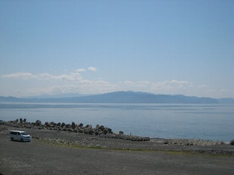
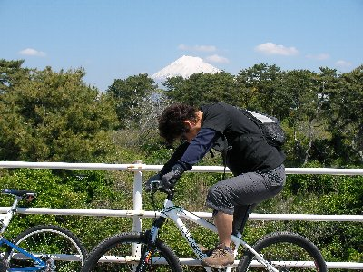
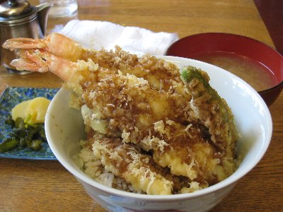
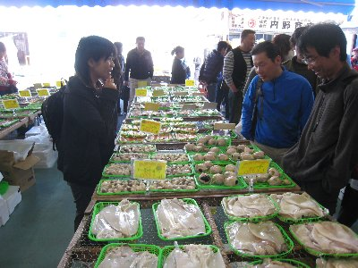
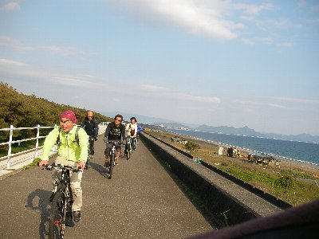

ゆるゆる自転車〜田子の浦 | 2010年4月 幹事：かむい |
|---|---|
| 昨年に計画されて強風のため中止となった、田子の浦〜沼津 自転車企画が、この春復活しました！ 寒い中やだ、熱いのやだ。で春になったわけですが、当日は快晴、気温も高くなく低くなく、暖かい感じで丁度良いです。 田子の浦港東の防波堤に10時集合でしたが、現地に駐車場が無いとの事だったので、港の西に車を置き、自転車で走って集合場所まで行ったのですが、適当に走れば着くだろう精神で、下調べもなく走ったら見事住宅街でハマり、集合時間をちょっぴりオーバー。 自分だけかと思いきや、たかにぃが集合場所分からず、先のほうで待ってるとのこと。よかった〜。 今回の目的は、ゆっくりのんびり走って、沼津港でお昼食べて、戻ってくる。マッタリ企画です。 | |
|  伊豆半島もくっきり。良い天気だ。 |  ちょっと見にくいけど、後ろが富士山です |
| 走る場所も防波堤の上なので、車通りもなく、さわやかな風に吹かれ、気持ちが良い〜 のハズでしたが、実はこの防波堤は、自転車をやる人には有名らしく、ロードチャリに乗った人たちが、ガンガン走ってきます。当然ですが我々が集団で走っていると邪魔者扱いです。 どうしても話をしながら走っていると、横に広がりがちなので、気をつけないと後ろから猛スピードで追い抜かれビビります。 まさにロード練習場。危険です。 途中から気が付いたのですが、防波堤の一段下、海側にもう一本道路があり、こちらを行けば安心です。 沼津港までは片道17キロほど、途中休憩しておしゃべりしたり、約2時間ぐらいかけてのんびりと行きました。 沼津港は休日なので、どこも激混みです。お店の前に人待ちの列が出来ています。 まあ、しょうがないよね。で、どこにしますか？ | |
 伝説の店、喫茶タロー |  意外に普通の天丼 |
| Ryuuさんが、沼津に来たらココってお店があるというので、そこに行ってみますが、・・・・これ、喫茶店じゃないの？喫茶タローって書いてあるし。一応漁港に来てるんですけど。 確かに看板には、コーヒーとかに交じって天丼とか書いてあるけど、どうよ？ 悩んだ挙句、話のネタに入ってもいいか。と入りました。さすが、Ryuuさんお勧めの店、日曜12時チョイ過ぎ、店には誰もいません。 地元の人が食べにくるから大丈夫と、Ryuuさん言うけど、誰もいませんが。 とりあえず、私は天丼を注文。まあ、ご飯メニュー少ないから選べないんだけどね。 お店のご主人、「ランチ注文の人は、コーヒー200円ですから」なんて言うので、「ああ、そうですか」と答えると、勝手口から出て、しばらく帰ってきません。 もしかして、今から材料仕入れか？ 帰ってきた後も、いまいち調理風の音がしないのが気になりましたが、きっと私の耳が悪いのでしょう。 注文から35分ぐらいで、天丼出てきました。至って普通です。これ、良い意味ですよ。味も期待していたトンデモではなく、普通に美味しいです。 たかにぃが注文したヅケ丼？鉄火丼？は、まだです。 後からカップルが入ってきて、飲み物を注文したらしいのですが、これもまだです。順番に厳しい店主のようですね。 私が食べ終わるころ、ヅケ丼？鉄火丼？がきました。みんなの前にコーヒーも置かれ・・・・いつ、注文したっけ？ あ、ランチセットか？ カップルも30分待ちで飲み物来たようで、よかったです。さて、会計を・・・・やっぱ、プラス200円ですか。コーヒー代入ってますね。コーヒーはデフォルトで注文体制のようです。 そんな感じのお店、終始面白く、忍び笑いで見てました。沼津港でこの店をチョイスするRyuuさんに感謝です！ | |
|  ちょっと沼津港で寄り道 |  帰りも快適に、ゆるゆると |
| さて、お腹も一杯になったし、帰りますか。 ロード族は午前中だけなのか、帰りは見かけなくなり、まさにマッタリモード。 今日は帰りが向かい風。行きよりちょっと大変かな。でも、のんびり帰りました。 総距離34キロ程度で、本日終了〜 あー、久しぶりに自転車乗りました。また、食い道楽チャリツー行きたいですね。 | |
| 写真＆コメント ｂｙ べっしー | |